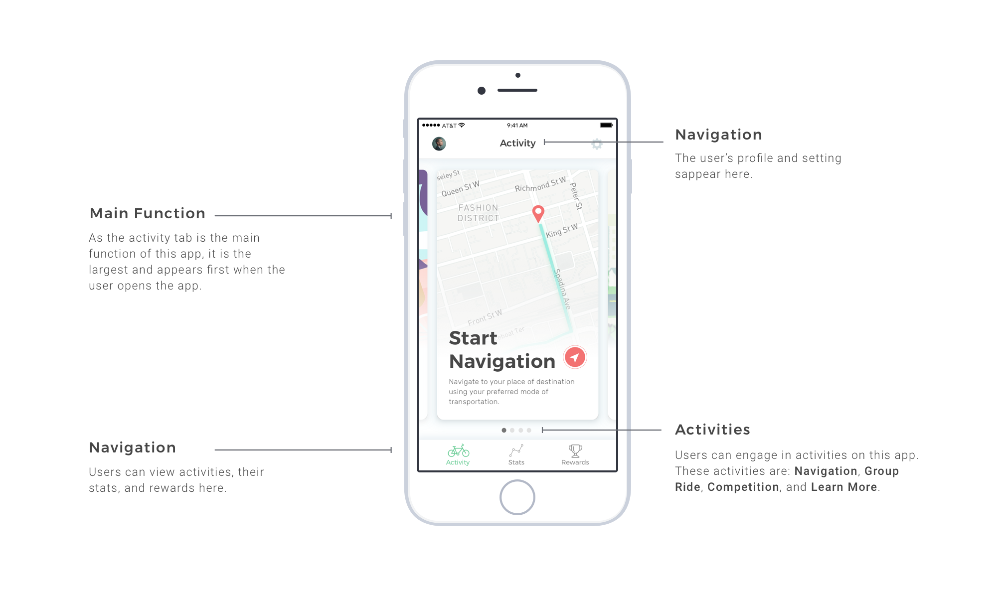
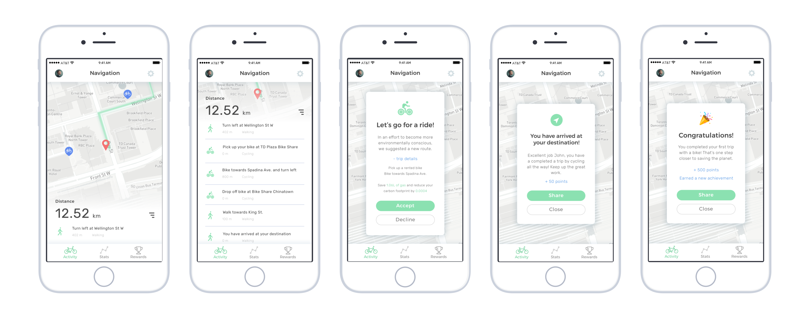
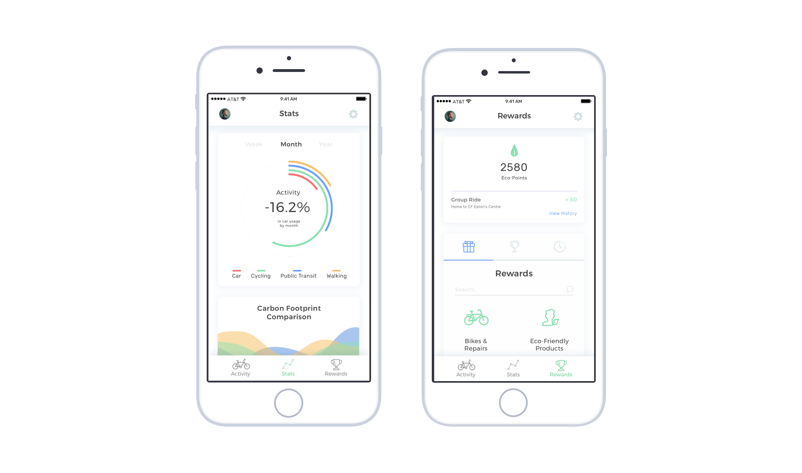

Motivating users to become more environmentally conscious.
For this design challenge, we were tasked to create a new service that would help someone understand how their daily choices have an impact on their environment. This concept was designed in a span of three days.
For this challenge, we were given requirements for the mobile app:
Designer
February 2018
I started off by researching various environmental problems people can tackle on a daily basis. Afterwards, I created a problem statement based on the design challenge that would help guide my research and design.
"How might we make an individual make well informed and sensible choices for the environment while at the same time, give them a way to take more visible and consistent action?"
The problem I am looking to tackle is reducing an individual’s carbon footprint by gradually assisting them in changing their preferred mode of transportation to an eco-friendlier choice. This app will automatically track the user’s carbon footprint of their commute by using a GPS (similar to Google Maps Timeline).
To motivate users in becoming more environmentally friendly, we must make it enjoyable, friendly, educational, and gradual.
To motivate people in becoming more environmentally friendly, making a service enjoyable was one way to retain user engagement. The user is able to engage in multiple activities in this app with others such as 'Competition' where the user can have a friendly competition with their colleagues or friends or 'Group Ride' which allows the user to create or find a group where people commute by bike together (and make some friends along the way!).
Through research, Cognitive and Behavioural Scientists found that it is difficult for an individual to use an alternative mode of transportation because commuting habits are so fixed and automatic. To alleviate this problem, this app will send out suggestions via push notifications or in-app suggestions to gradually change their habits.
To motivate users to become more environmentally aware, the app must feel easy and personal. Information is automatically logged and tracked into the app where the users can view their stats via the ‘Stat’s tab in navigation.
To make environmental change more enjoyable, and for a user to take consistent action, the app will reward users with redeemable points and achievements. To further incentivize users, they can redeem points for a bicycle, maintenance, or repairs so they don’t have to spend as much money on environmentally friendly choices.
